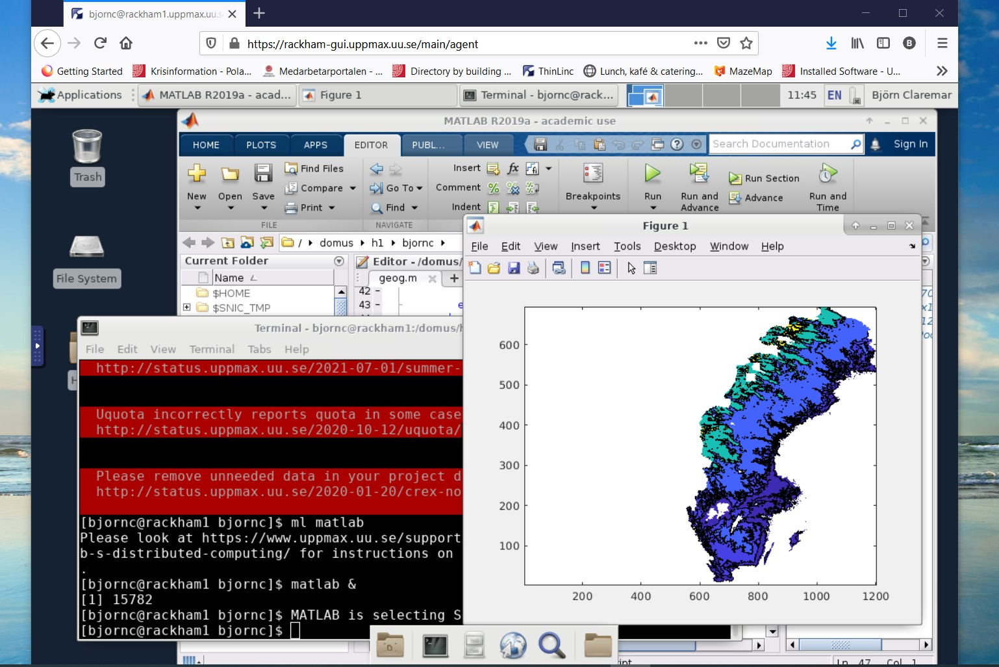

Log in to Bianca¶
Objectives
- We'll go through the methods to log in
Note
- Remember that Rackham is your friend as well in your work.
- Being able to work there as well will improve your possibilities to work effectively when you also need some sort of internet connection. For instance:
- installing tools
- installing Python, R and Julia packages
- transfer scripts
- updating your git repositories (not containing sensitive data)
Bianca's design¶
- Bianca was designed
- to make accidental data leaks difficult
- to make correct data management as easy as possible
- to emulate the HPC cluster environment that SNIC users were familiar with
- to provide a maximum amount of resources
- and to satisfy regulations.
Bianca has no Internet¶
- Still you can log in, but it is done in two steps!
- We recomend the ThinLink web portal, to enable graphics

- Bianca is only accessible from within Sunet (i.e. from university networks).
- Use VPN outside Sunet. Link to VPN for UU
- You can get VPN credentials from all Swedish universities.
- The whole Bianca cluster (blue) contains hundreds of virtual project clusters (green), each of which is isolated from each other and the Internet.
- Data can be transferred to or from a virtual project cluster through the Wharf, which is a special file area that is visible from the Internet.
Log in¶
- You can log in either through ThinLinc or via ssh
- If you are using graphics of an kind, use ThinLinc
- Otherwise, if you just ned the commandline, it is enough to use ssh.
- ssh from home terminal
- ssh from a session on Rackham
Log in to Bianca with ThinLinc¶
- Bianca offers graphical login
- You need to be on SUNET or use VPN
- On web:
Warning
The ThinLinc application will work for Rackham but not Bianca

The log in steps¶
- When you log in to https://bianca.uppmax.uu.se, your SSH or ThinLinc client first meets the blue Bianca login node.
- user name:
<username>-<projid>@bianca.uppmax.uu.se- like:
myname-sens2023531@bianca.uppmax.uu.se
- like:
- password: your password, directly followed by the 6-digit 2-factor
- like: verysecret678123
- user name:
- After checking your [2-factor authentication] this server looks for your virtual project cluster.
- If it's present, then you are transferred to a login prompt on your cluster's login node. If not, then the virtual cluster is started.
- you are prompted to give your username and password again, this time without projid and 2nd-factor:
- username:
<myname> - password: verysecret
- username:
- you are prompted to give your username and password again, this time without projid and 2nd-factor:
- Inside each virtual project cluster, by default there is just a one-core login node. When you need more memory or more CPU power, you submit a job (interactive or batch), and an idle node will be moved into your project cluster.
Log in via ssh¶
You may try to log in any of your terminals https://uppmax.github.io/uppmax_intro/login2.html#terminals
- you are prompted to give your password directly followed by the 6-digit 2-factor - like: verysecret678123Start an interactive session¶
To be able to work with the type alongs we strongly recommend you to start an interactive session already now.
- More about interactive sessions and Slurm in the afternoon, but we don't need a further insight in this to proceed now!
Start the interactive session
We start an 8 hour session with 2 cores.
keypoints
- We recommend you to use ThinLinc to log in when you need graphics